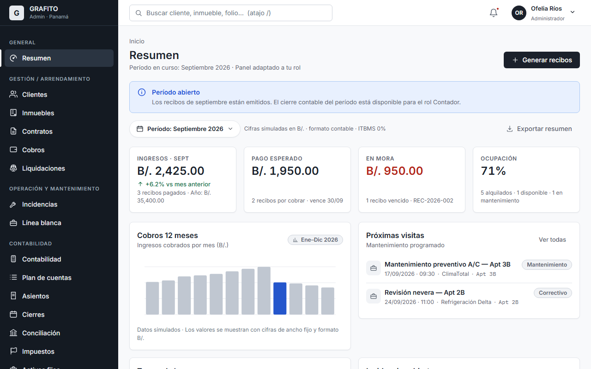
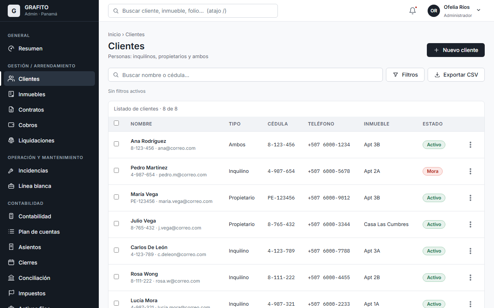
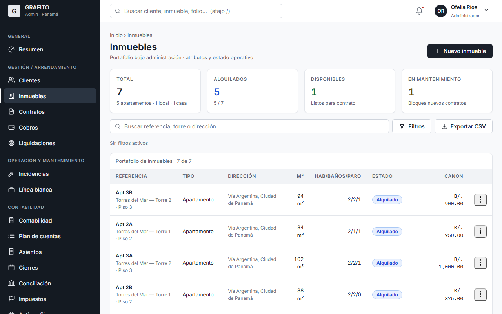
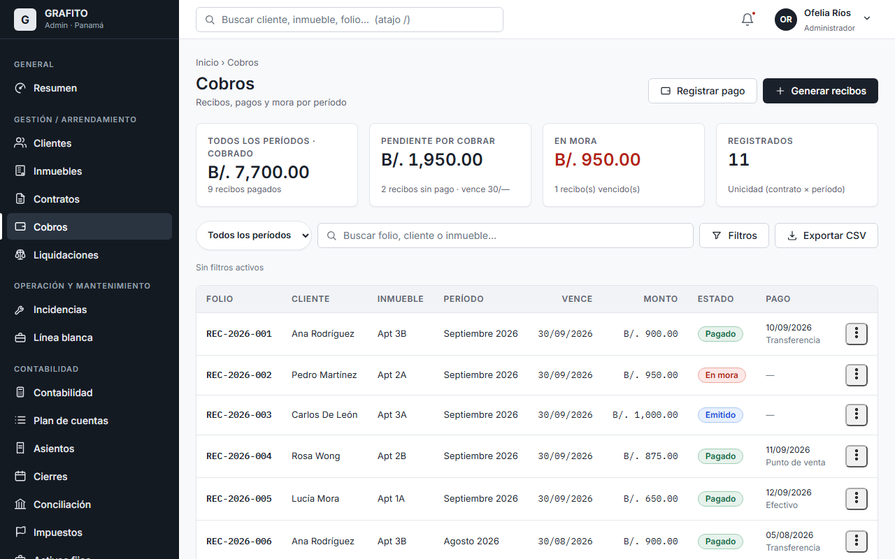
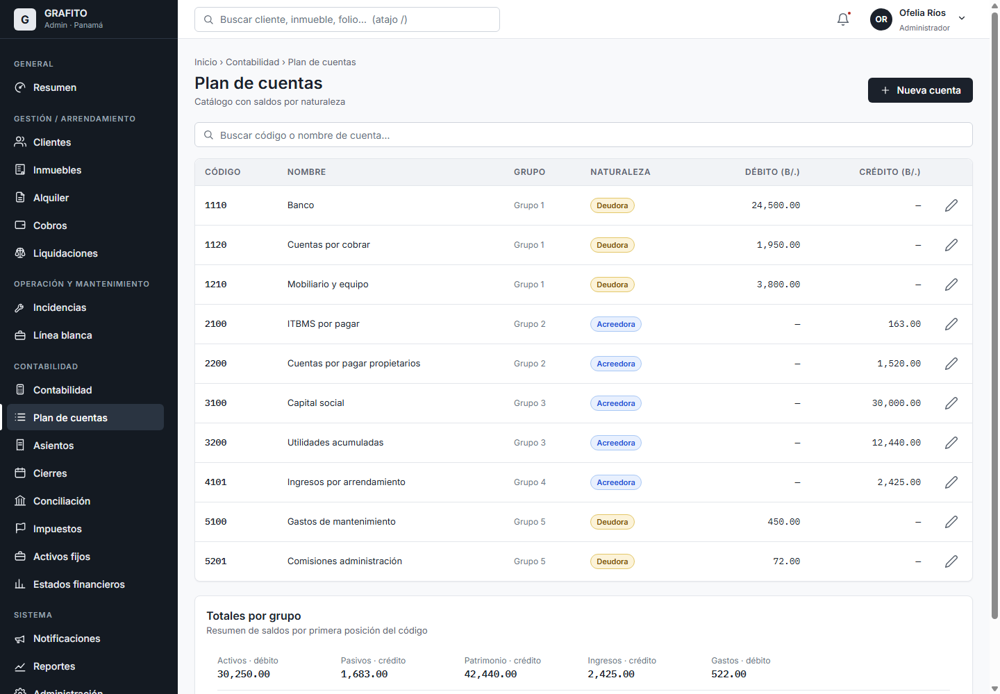
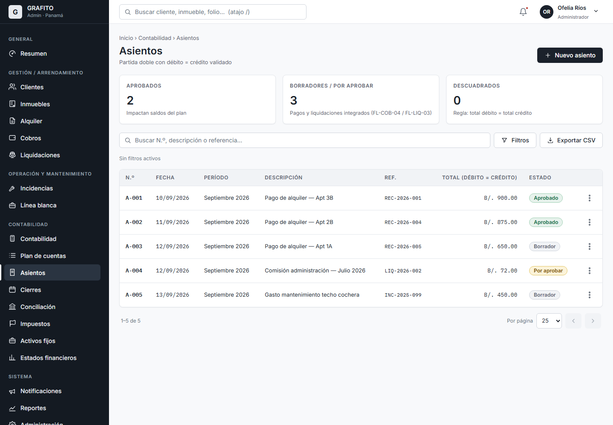
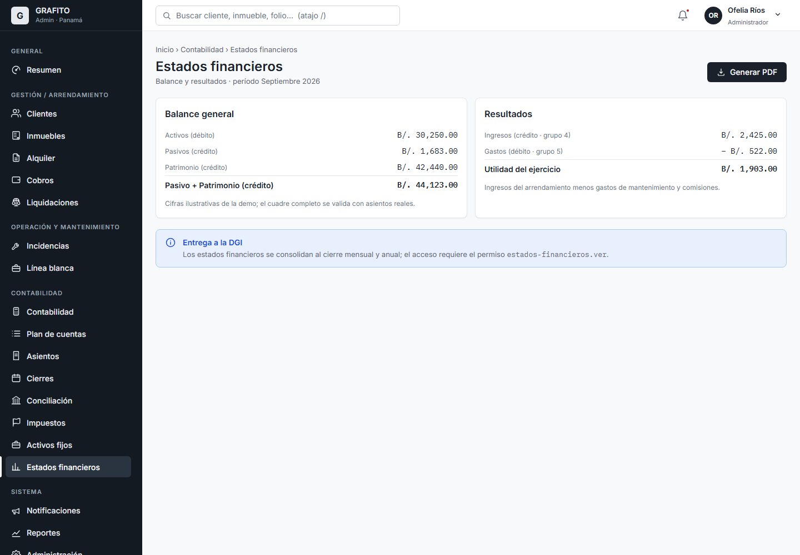
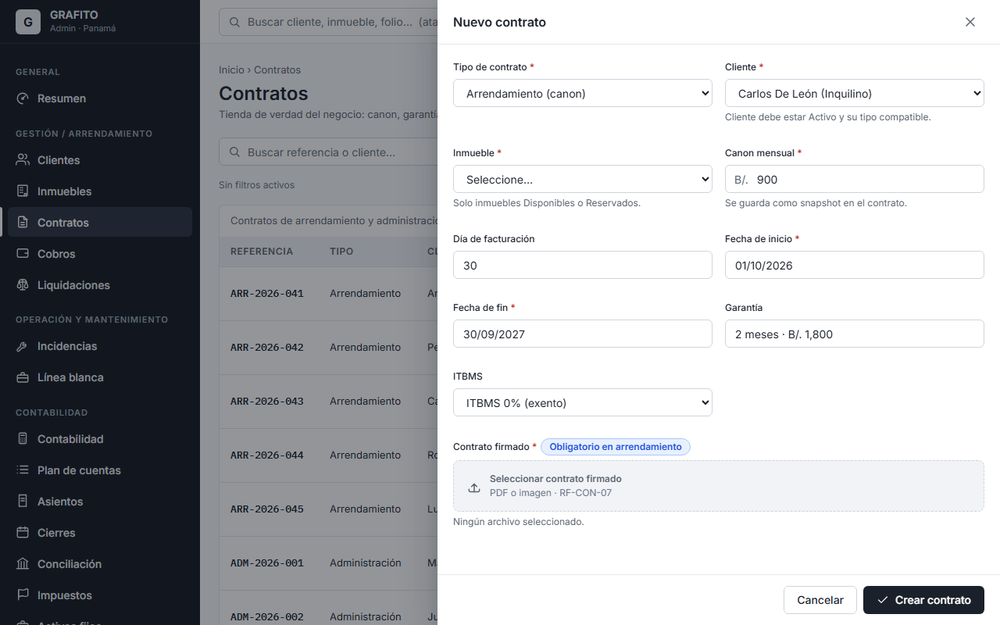

Plataforma de Administración de Inmuebles, Portales y Contabilidad
Una sola aplicación para administrar su portafolio de alquileres de principio a fin: personas, inmuebles, contratos, cobros, operaciones y contabilidad panameña.
Panamá · USD/BalboaDiseño de solución · Septiembre 2026
Agenda
Qué veremos en esta presentación
01 · Contexto y problema
02 · Objetivos y solución propuesta
03 · Módulos de la plataforma
04 · Experiencia de usuario (prototipo GRAFITO)
05 · Arquitectura y seguridad
06 · Plan de desarrollo por fases y prioridades
07 · Migración de datos desde SharePoint
08 · Alcance, decisiones y próximos pasos
Contexto
Problema que resolvemos
Hoy: operación manual y dispersa
Información repartida en SharePoint y hojas de cálculo, sin un registro único consolidado.
Seguimiento de cobros, mora y liquidaciones a propietarios con procesos manuales.
Sin comprobantes auditables, historial trazable ni estados derivados (mora automática).
Incidencias, visitas y equipos de línea blanca sin historial documentado.
Contabilidad (plan de cuentas, asientos, cierres e impuestos) sin soporte de sistema.
Datos de referencia confirmados
~400
unidades administradas
~2,500
pagos por mes
3
áreas de usuarios (Admin, Inquilino, Propietario)
Implicaciones
Riesgo de descontrol de cartera y mora.
Riesgo legal y fiscal (marco panameño: DGI, Ley 81/2019, ITBMS).
Dificultad para reportar y tomar decisiones en el día a día.
Objetivos y solución
Una plataforma única, tres experiencias
Consolidar toda la operación en un solo sistema con fronteras claras por rol, datos en un solo lugar, y autorización verificada siempre en el backend.
Área Administración
Equipo de la empresa: clientes, inmuebles, contratos, cobros, liquidaciones, incidencias, línea blanca, notificaciones, contabilidad, reportes y administración de roles.
Portal del Inquilino
El inquilino consulta su estado de cuenta, paga, descarga su comprobante, reporta incidencias y ve su calendario de pagos y visitas.
Portal del Propietario
A consulta de cuándo y cuánto se le paga. En discusión · fase futura
Principios rectores: el dinero es transaccional (inmutable y auditable) · modularidad con soberanía de datos · roles dinámicos creados por el cliente con permisos fijos sembrados · seguridad desde el diseño.
Módulos
Panorama de la plataforma
👥
Clientes
Inquilinos y propietarios
F1
🏢
Inmuebles
Portafolio y fotos
F1
📋
Contratos
Arrendamiento y administración
F1
💵
Cobros
Recibos, pagos, mora
F1
🤝
Liquidaciones
Pagos a propietarios
F1
🔧
Incidencias
Workflow y proveedores
F2
❄️
Línea blanca
Equipos y mantenimientos
F2
🔔
Notificaciones
Plataforma, Email, SMS, WhatsApp
F2
🔥
Contabilidad
Partida doble, cierres, impuestos
F3
📊
Reportes
Operativos y financieros
F2/F3
🛡️
Administración y Seguridad
Usuarios, roles, permisos, flags
F0
📱
Portal Inquilino
Área de usuario del inquilino
F1+
F0–F3 Fase de implementación según el plan de desarrollo (sección 06)
Módulos · Núcleo del negocio (F1)
Lo esencial para operar el portafolio
Clientes
Personas/empresas: inquilino, propietario o ambos.
Información laboral, contactos, documentos y cuentas bancarias.
Consentimientos de datos personales Ley 81 de 2019.
Estado Mora derivado automáticamente de los cobros.
Inmuebles
Catálogo con atributos enriquecidos y fotografías.
Ciclo de vida: disponible → reservado → alquilado → mantenimiento.
Exclusividad de ocupación (un contrato vigente por unidad).
Historial de estados, incidencias y equipos asociados.
Contratos
Arrendamiento (canon, garantía, ITBMS) y administración (comisión).
Snapshot económico para no alterar liquidaciones históricas.
Contrato firmado obligatorio en arrendamiento.
Renovación, terminación con prorrateo y devolución de garantía.
Cobros y liquidaciones
Generación masiva de recibos por período (unicidad contrato × período).
Mora automática por vencimiento; pagos con comprobante PDF inmutable.
Liquidación a propietarios: ingreso cobrado − comisión.
Cada pago genera el asiento contable borrador pendiente de aprobación.
Módulos · Operación y comunicación (F2)
Control operativo y comunicación con el inquilino
Incidencias y visitas
Reporte desde el portal o la administración, con categoría y urgencia.
Motor parametrizado: ITBMS 7%, ISR, retenciones, dividendos.
Activos fijos y depreciación (integra línea blanca).
Estados financieros: Balance, Resultados, Flujo y Balanza.
Nota: las tasas y reglas fiscales deben validarse con CPA y asesor legal panameño antes de implementar; el módulo se parametriza y recalibra en la Fase 3.
Portal y seguridad
Portal del inquilino y administración de acceso
Portal del inquilino área separada
Dashboard: saldo, próximo pago, incidencias y notificaciones.
Calendario de pagos y visitas de mantenimiento.
Reportar y seguir incidencias; descargar comprobantes PDF.
Acceso solo a sus propios datos (scope por relación, protección IDOR).
Administración y Seguridad transversal
El cliente crea sus propios roles a partir de un catálogo fijo de permisos.
Permisos `módulo.acción`; el backend siempre valida permiso + flag + regla.
Feature flags por módulo y auditoría de acciones críticas.
-1 regla: nadie puede revocarse su último permiso de administración.
Experiencia de usuario · GRAFITO
Interfaz ya diseñada y prototipada
La UI está diseñada y validada con un prototipo ejecutable. Sistema de diseño GRAFITO: sobrio, formal, neutral y predecible; accesible (WCAG 2.2 AA+).

Dashboard con KPIs por módulo

Clientes: listado con demografía y estado

Inmuebles: portafolio y filtros

Cobros: recibos, pagos y mora
Experiencia de usuario · Contabilidad
Contabilidad en acción

Plan de cuentas con naturaleza y débito/crédito

Asientos: partida doble (débito = crédito)

Estados financieros por período

Contratos: asistente de arrendamiento
Arquitectura
Diseño técnico de la solución
Aplicación web Blazor + MudBlazor · Admin y portales
↓ HTTPS/JSON
API Gateway (YARP) routing · rate limit · correlación
Grafana + Loki observabilidad de extremo a extremo
Monolito modular: un despliegue, fronteras por módulo (ADR-015), contención de fallos y kill-switch por módulo (ADR-016/017), comprobantes PDF inmutables y observabilidad por módulo.
Clientes, Inmuebles, Contratos, Cobros con comprobantes PDF, Liquidaciones, portal inquilino base. Cierre de decisiones D1–D12 y validación legal.
Prioridad Alta
Fase 2 · Operación
≈ 1,455 h
Incidencias, visitas y calendario, notificaciones multicanal, línea blanca, reportes operativos.
Prioridad Media
Fase 3 · Contabilidad
≈ 1,969 h
Plan de cuentas, asientos y automatización, cierres parametrizables, conciliación, impuestos, activos fijos, estados financieros. Recalibra tras cuestionario CPA.
Prioridad Alta · mayor complejidad
Prioridades
Prioridad por módulo dentro del plan
Módulo
Fase
Prioridad
Justificación
Administración y Seguridad
F0
Alta
Base de toda la plataforma (RBAC, flags, config).
Clientes
F1
Alta
Identidad de inquilinos y propietarios.
Inmuebles
F1
Alta
Catálogo del portafolio.
Contratos
F1
Alta
Tienda de verdad del negocio.
Cobros
F1
Alta
Flujo de dinero: recibos, pagos, mora.
Liquidaciones
F1
Alta
Pagos a propietarios.
Portal Inquilino (base)
F1
Alta
Autoservicio del inquilino.
Incidencias
F2
Media
Operación; depende de inmuebles/contratos.
Línea blanca
F2
Media
Inventario y mantenimientos.
Notificaciones + Calendario
F2
Media
Comunicación; depende de cobros/incidencias.
Reportes
F2/F3
Media
Operativos en F2; financieros con Contabilidad.
Contabilidad
F3
Alta
Completa cierra el ciclo; validación CPA previa.
Prioridades derivadas del plan por fases documentado (`docs/planificacion/analisis-comercial-financiero.md`). Contabilidad puede iniciar su base (plan + asientos manuales) en paralelo al cierre de F2.
Datos históricos
Migración de la información desde SharePoint
¿Es posible migrar todos los datos?
Sí, es posible migrar la data que hoy se mantiene en SharePoint hacia la nueva plataforma.
Requiere un proceso de revisión y análisis por separado de las fuentes existentes.
No se tiene contemplada una vía más automatizada en el alcance actual: la carga inicial se define con los datos normalizados o captura desde cero.
Se dimensiona como un servicio aparte (bolsa de horas o contrato propio), fuera del alcance F0–F3.
Pasos propuestos para el análisis
1 · Inventario de fuentes y volúmenes en SharePoint (clientes, inmuebles, recibos, contratos).
2 · Validación de calidad y normalización de la data con el equipo del cliente.
3 · Definición de estrategia: carga inicial completa vs. arranque desde cero.
4 · Carga, validación (conciliación de saldos) y go-live de datos.
Recomendación: coordinar la revisión de datos al inicio del proyecto (se nivela con la Fase 1) para que la carga inicial no retrase el arranque de operaciones.
A confirmar
Decisiones y pendientes antes de implementar
Validaciones externas (bloqueantes)
CPA panameño: plan de cuentas, NIIF vs NIIF PYMES, tasas ISR/ITBMS/retenciones, ITBMS del arrendamiento.
Asesor legal: marco de arrendamiento, retención documental (10 años), Ley 81/2019.
Confirmación de ciudad principal y proveedores (correo, SMS, WhatsApp, almacenamiento).
Reglas de negocio (12 decisiones D1–D12)
Mora del cliente derivada de cualquier recibo vencido.
Fórmula de prorrateo / terminación anticipada de contrato.
Anulaciones: requisito de motivo + supervisor; pagos parciales.
Cierre contable bloqueado si el banco no está conciliado (sí, recomendado).
Separación de funciones en asientos y contratos; permisos nuevos del catálogo.
Estas decisiones cambian el comportamiento, no el tamaño del proyecto; se cierran idealmente en una sesión de decisiones al inicio de la Fase 1.
GRAFITO
¿Siguiente paso?
Definamos juntos el alcance contractual por fases, validemos el marco legal y fiscal, y cerremos las decisiones de negocio para arrancar la Fase 0.
Plan sugerido: Fases 0–3Esfuerzo: 6,943 h · 9–11 mesesMigración SharePoint: análisis aparte